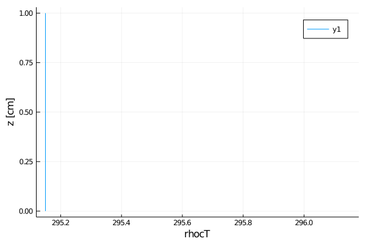
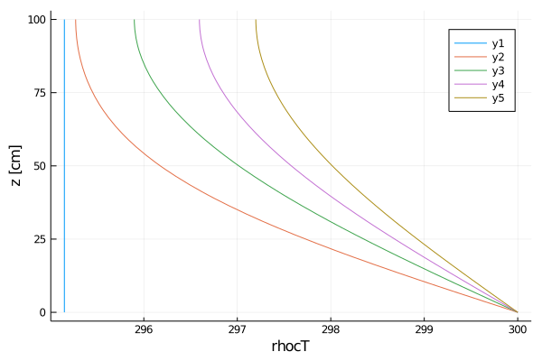

Heat equation tutorial
In this tutorial, we'll be solving the heat equation:
$\frac{∂ T}{∂ t} + ∇ ⋅ (-α ∇T) = 0$
where
αis the thermal diffusivityTis the temperature (the unknown we're solving for)
To put this in the form of ClimateMachine's BalanceLaw, we'll re-write the equation as:
$\frac{∂ T}{∂ t} + ∇ ⋅ (F(T,t)) = 0$
where
F(T,t) = -α ∇Tis the diffusive flux
with boundary conditions
- Fixed temperature
T_surfaceat z_{min} (non-zero Dirichlet) - No thermal flux at z_{min} (zero Neumann)
Solving these equations is broken down into the following steps:
- Preliminary configuration
- PDEs
- Space discretization
- Time discretization
- Solver hooks / callbacks
- Solve
- Post-processing
Preliminary configuration
Loading code
First, we'll load our pre-requisites
- load external packages:
using MPI
using Test
using Logging
using Printf
using NCDatasets
using LinearAlgebra
using OrderedCollections
using Interpolations
using DelimitedFiles
using Plots
using StaticArrays- load necessary ClimateMachine modules:
using ClimateMachine
using ClimateMachine.Mesh.Topologies
using ClimateMachine.Mesh.Grids
using ClimateMachine.Writers
using ClimateMachine.VTK
using ClimateMachine.Mesh.Elements: interpolationmatrix
using ClimateMachine.DGmethods
using ClimateMachine.DGmethods.NumericalFluxes
using ClimateMachine.DGmethods: BalanceLaw, LocalGeometry
using ClimateMachine.MPIStateArrays
using ClimateMachine.GenericCallbacks: EveryXWallTimeSeconds, EveryXSimulationSteps
using ClimateMachine.GenericCallbacks
using ClimateMachine.ODESolvers
using ClimateMachine.VariableTemplates- import necessary ClimateMachine modules: (
importindicates that we must provide implementations of these structs/methods)
import ClimateMachine.DGmethods: vars_state_auxiliary,
vars_state_conservative,
vars_state_gradient,
vars_state_gradient_flux,
source!,
flux_second_order!,
flux_first_order!,
compute_gradient_argument!,
compute_gradient_flux!,
update_auxiliary_state!,
nodal_update_auxiliary_state!,
init_state_auxiliary!,
init_state_conservative!,
boundary_state!Initialization
Define the float type (Float64 or Float32)
FT = Float64;Initialize ClimateMachine for CPU.
ClimateMachine.init(; disable_gpu=true);
const clima_dir = dirname(dirname(pathof(ClimateMachine)))"/home/runner/work/ClimateMachine.jl/ClimateMachine.jl"Load some helper functions (soon to be incorporated into ClimateMachine/src)
include(joinpath(clima_dir, "tutorials", "Land", "helper_funcs.jl"))
include(joinpath(clima_dir, "tutorials", "Land", "plotting_funcs.jl"))export_plot_snapshot (generic function with 1 method)Define the set of Partial Differential Equations (PDEs)
Model parameters can be stored in the particular BalanceLaw, in this case, a HeatModel:
Base.@kwdef struct HeatModel{FT} <: BalanceLaw
"Heat capacity"
ρc::FT = 1
"Thermal diffusivity"
α::FT = 0.01
"Initial conditions for temperature"
initialT::FT = 295.15
"Surface boundary value for temperature (Dirichlet boundary conditions)"
surfaceT::FT = 300.0
endCreate an instance of the HeatModel:
m = HeatModel{FT}();All of the methods defined below, in this section, were imported in Loading code, and we must provide our own implementation as these methods are called inside solve!. Each of these methods have a fall-back of "do nothing" if we don't, or fail to, implement these methods after importing.
Specify auxiliary variables for HeatModel (stored in aux)
vars_state_auxiliary(::HeatModel, FT) = @vars(z::FT, T::FT);Specify state variables, the variables solved for in the PDEs, for HeatModel (stored in Q)
vars_state_conservative(::HeatModel, FT) = @vars(ρcT::FT);Specify state variables whose gradients are needed for HeatModel
vars_state_gradient(::HeatModel, FT) = @vars(T::FT);Specify gradient variables for HeatModel
vars_state_gradient_flux(::HeatModel, FT) = @vars(∇T::SVector{3,FT});Specify the initial values in aux::Vars, which are available in init_state_conservative!. Note that
- this method is only called at
t=0 aux.zandaux.Tare available here because we've specifiedzandTinvars_state_auxiliary
function init_state_auxiliary!(m::HeatModel, aux::Vars, geom::LocalGeometry)
aux.z = geom.coord[3]
aux.T = m.initialT
end;Specify the initial values in state::Vars. Note that
- this method is only called at
t=0 state.ρcTis available here because we've specifiedρcTinvars_state_conservative
function init_state_conservative!(m::HeatModel, state::Vars, aux::Vars, coords, t::Real)
state.ρcT = m.ρc * aux.T
end;The remaining methods, defined in this section, are called at every time-step in the solver by the BalanceLaw framework.
Overload update_aux! to call soil_nodal_update_aux!, or any other auxiliary methods
function update_aux!(dg::DGModel, m::HeatModel, Q::MPIStateArray, t::Real, elems::UnitRange)
nodal_update_aux!(soil_nodal_update_aux!, dg, m, Q, t, elems)
return true # TODO: remove return true
end;Compute/update all auxiliary variables at each node. Note that
aux.Tis available here because we've specifiedTinvars_state_auxiliary
function soil_nodal_update_aux!(m::HeatModel, state::Vars, aux::Vars, t::Real)
aux.T = state.ρcT / m.ρc
end;Since we have diffusive fluxes, we must tell ClimateMachine to compute the gradient of T. Here, we specify how T is computed. Note that
transform.Tis available here because we've specifiedTinvars_state_gradient
function compute_gradient_argument!(m::HeatModel, transform::Vars, state::Vars, aux::Vars, t::Real)
transform.T = state.ρcT / m.ρc
end;Specify where in diffusive::Vars to store the computed gradient in compute_gradient_argument!. Note that:
diffusive.∇Tis available here because we've specified∇Tinvars_state_gradient_flux∇transform.Tis available here because we've specifiedTinvars_state_gradient
function compute_gradient_flux!(m::HeatModel, diffusive::Vars, ∇transform::Grad, state::Vars, aux::Vars, t::Real)
diffusive.∇T = ∇transform.T
end;We do no have sources, nor non-diffusive fluxes.
function source!(m::HeatModel, _...); end;
function flux_first_order!(
m::HeatModel,
flux::Grad,
state::Vars,
aux::Vars,
t::Real,
)
endflux_first_order! (generic function with 11 methods)Compute diffusive flux ($F(T,t) = -α ∇T$ in the original PDE). Note that:
diffusive.∇Tis available here because we've specified∇Tinvars_state_gradient_flux
function flux_second_order!(m::HeatModel, flux::Grad, state::Vars, diffusive::Vars, hyperdiffusive::Vars, aux::Vars, t::Real)
flux.ρcT -= m.α * diffusive.∇T
end;Boundary conditions
Boundary conditions are specified for diffusive and non-diffusive terms
The boundary conditions for ρcT are specified here for non-diffusive terms
function boundary_state!(nf, m::HeatModel, state⁺::Vars, aux⁺::Vars,
nM, state⁻::Vars, aux⁻::Vars, bctype, t, _...)
if bctype == 1 # surface
state⁺.ρcT = m.ρc * m.surfaceT
elseif bctype == 2 # bottom
nothing
end
end;The boundary conditions for ρcT are specified here for diffusive terms
function boundary_state!(nf, m::HeatModel, state⁺::Vars, diff⁺::Vars,
aux⁺::Vars, nM, state⁻::Vars, diff⁻::Vars, aux⁻::Vars,
bctype, t, _...)
if bctype == 1 # surface
state⁺.ρcT = m.ρc * m.surfaceT
elseif bctype == 2 # bottom
diff⁺.∇T = -diff⁻.∇T
end
end;Spatial discretization
Prescribe vector of vertical elements (in meters)
velems = collect(0:10) / 10;Prescribe polynomial order of basis functions in finite elements
N_poly = 5;Define a grid
grid = SingleStackGrid(MPI, velems, N_poly, FT, Array)ClimateMachine.Mesh.Grids.DiscontinuousSpectralElementGrid{Float64,3,5,216,Array,Array{Float64,1},Array{Float64,2},Array{Float64,3},Array{Float64,4},Array{Int64,1},Array{Int64,2},Array{Int64,3},ClimateMachine.Mesh.Topologies.StackedBrickTopology{3,Float64}}(ClimateMachine.Mesh.Topologies.StackedBrickTopology{3,Float64}(ClimateMachine.Mesh.Topologies.BoxElementTopology{3,Float64}(MPI.Comm(1140850688), 1:10, 1:10, 11:10, , Int64[], , [1, 2, 3, 4, 5, 6, 7, 8, 9, 10], Int64[], [0.0 1.0 … 0.0 1.0; 0.0 0.0 … 1.0 1.0; 0.0 0.0 … 0.1 0.1]
[0.0 1.0 … 0.0 1.0; 0.0 0.0 … 1.0 1.0; 0.1 0.1 … 0.2 0.2]
[0.0 1.0 … 0.0 1.0; 0.0 0.0 … 1.0 1.0; 0.2 0.2 … 0.3 0.3]
[0.0 1.0 … 0.0 1.0; 0.0 0.0 … 1.0 1.0; 0.3 0.3 … 0.4 0.4]
[0.0 1.0 … 0.0 1.0; 0.0 0.0 … 1.0 1.0; 0.4 0.4 … 0.5 0.5]
[0.0 1.0 … 0.0 1.0; 0.0 0.0 … 1.0 1.0; 0.5 0.5 … 0.6 0.6]
[0.0 1.0 … 0.0 1.0; 0.0 0.0 … 1.0 1.0; 0.6 0.6 … 0.7 0.7]
[0.0 1.0 … 0.0 1.0; 0.0 0.0 … 1.0 1.0; 0.7 0.7 … 0.8 0.8]
[0.0 1.0 … 0.0 1.0; 0.0 0.0 … 1.0 1.0; 0.8 0.8 … 0.9 0.9]
[0.0 1.0 … 0.0 1.0; 0.0 0.0 … 1.0 1.0; 0.9 0.9 … 1.0 1.0], [1 2 … 9 10; 1 2 … 9 10; … ; 1 1 … 8 9; 2 3 … 10 10], [2 2 … 2 2; 1 1 … 1 1; … ; 5 6 … 6 6; 5 5 … 5 6], [1 1 … 1 1; 1 1 … 1 1; … ; 1 1 … 1 1; 1 1 … 1 1], [0 0 … 0 0; 0 0 … 0 0; … ; 1 0 … 0 0; 0 0 … 0 2], Int64[], UnitRange{Int64}[], UnitRange{Int64}[], Int64[], true), 10), [2.0 0.0 … 0.0 0.04999999999999996; 1.9999999999999993 0.0 … 0.0 0.049999999999999975; … ; 2.000000000000019 2.2204460492503005e-15 … 0.09999999999999998 0.05000000000000034; 1.9999999999999818 6.661338147750909e-15 … 0.09999999999999996 0.049999999999999926]
[2.000000000000008 0.0 … 0.1 0.05000000000000021; 2.0000000000000333 0.0 … 0.1 0.05000000000000083; … ; 2.0000000000000613 -2.7755575615628816e-14 … 0.19999999999999996 0.050000000000001585; 1.9999999999999885 1.7763568394002426e-14 … 0.19999999999999996 0.05000000000000015]
[2.000000000000029 0.0 … 0.2 0.05000000000000096; 2.0000000000000084 0.0 … 0.2 0.050000000000000246; … ; 1.9999999999998614 2.60902410786912e-14 … 0.2999999999999999 0.04999999999999509; 2.0000000000000373 3.9968028886505635e-14 … 0.2999999999999999 0.05000000000000187]
[2.0000000000000364 0.0 … 0.3 0.05000000000000103; 1.999999999999911 0.0 … 0.3 0.049999999999997345; … ; 2.00000000000003 -2.7755575615628693e-15 … 0.39999999999999997 0.0499999999999999; 2.0000000000002327 -2.19824158875781e-13 … 0.3999999999999999 0.05000000000001436]
[2.0000000000001066 0.0 … 0.4 0.050000000000004305; 1.9999999999999667 0.0 … 0.4 0.04999999999999899; … ; 1.9999999999999503 -1.0269562977782798e-13 … 0.4999999999999999 0.04999999999999966; 2.000000000000046 4.662936703425699e-14 … 0.4999999999999999 0.05000000000000237]
[2.000000000000063 0.0 … 0.5 0.05000000000000117; 1.9999999999999707 0.0 … 0.5 0.04999999999999764; … ; 2.000000000000279 -2.60902410786912e-14 … 0.5999999999999998 0.050000000000007525; 2.000000000000419 -2.2648549702352388e-13 … 0.5999999999999999 0.05000000000001741]
[2.000000000000069 0.0 … 0.6 0.05000000000000228; 1.99999999999995 0.0 … 0.6 0.04999999999999947; … ; 1.999999999999977 7.771561172376102e-15 … 0.6999999999999997 0.04999999999999789; 1.9999999999999396 1.487698852997657e-13 … 0.6999999999999998 0.049999999999998816]
[2.0000000000001044 0.0 … 0.7 0.05000000000000429; 1.99999999999997 0.0 … 0.7 0.04999999999999834; … ; 2.0000000000002256 -1.2712053631957828e-13 … 0.7999999999999999 0.05000000000000797; 2.0000000000000284 8.215650382226012e-14 … 0.7999999999999998 0.050000000000001425]
[2.0000000000001377 0.0 … 0.8 0.05000000000000562; 1.9999999999999856 0.0 … 0.8 0.050000000000000794; … ; 1.999999999999586 6.050715484207001e-14 … 0.8999999999999998 0.049999999999986604; 1.9999999999997975 4.0634162701279285e-13 … 0.8999999999999999 0.04999999999999127]
[2.0000000000002887 0.0 … 0.9 0.0500000000000108; 2.000000000000071 0.0 … 0.8999999999999999 0.04999999999999982; … ; 2.0000000000003855 7.771561172376102e-15 … 0.9999999999999998 0.05000000000000841; 2.0000000000002593 -6.661338147750939e-15 … 0.9999999999999998 0.050000000000009474], [-1.0 -1.0 … -1.0 -1.0; -0.0 -0.0 … -0.0 -0.0; … ; 0.00011111111111111106 0.0006307915938297458 … 0.0006307915938297474 0.00011111111111111192; 270000.00000000006 47559.289460184475 … 47559.28946018415 269999.9999999968]
[1.0 1.0 … 1.0 1.0; 9.214851104388818e-15 -3.747002708109917e-16 … -3.0531133177191915e-15 1.3322676295501913e-14; … ; 0.00011111111111111102 0.0006307915938297452 … 0.0006307915938297496 0.00011111111111111141; 269999.999999998 47559.28946018422 … 47559.28946018385 269999.99999999575]
[-0.0 -0.0 … -0.0 -0.0; -1.0 -1.0 … -1.0 -1.0; … ; 0.00011111111111111106 0.0006307915938297458 … 0.0006307915938297475 0.00011111111111111192; 270000.00000000006 47559.289460184475 … 47559.28946018415 269999.9999999968]
[2.428612866367531e-15 -3.81639164714898e-16 … 1.1102230246251595e-15 3.3306690738754444e-15; 1.0 1.0 … 1.0 1.0; … ; 0.0001111111111111111 0.0006307915938297453 … 0.0006307915938297465 0.00011111111111111277; 269999.9999999981 47559.28946018417 … 47559.289460183856 269999.99999999575]
[-0.0 -0.0 … -0.0 -0.0; -0.0 -0.0 … -0.0 -0.0; … ; 0.0011111111111111115 0.006307915938297454 … 0.006307915938297466 0.0011111111111111154; 270000.00000000006 47559.289460184475 … 47559.2894601843 269999.999999997]
[5.689893001203886e-17 -4.163336342344284e-18 … -3.053113317719172e-16 6.661338147750975e-16; -5.134781488891366e-16 5.620504062164852e-16 … 3.3306690738754696e-16 -5.551115123125774e-16; … ; 0.001111111111111108 0.006307915938297462 … 0.006307915938297482 0.0011111111111111213; 269999.9999999991 47559.28946018429 … 47559.289460183856 269999.99999999575]
[-1.0 -1.0 … -1.0 -1.0; -0.0 -0.0 … -0.0 -0.0; … ; 0.00011111111111111112 0.0006307915938297463 … 0.000630791593829746 0.00011111111111111254; 270000.00000000105 47559.28946018454 … 47559.28946018404 269999.99999999505]
[1.0 1.0 … 1.0 1.0; -1.0685896612016877e-15 -2.033095913844819e-15 … -2.6922908347159686e-14 1.4432899320127032e-14; … ; 0.00011111111111111158 0.0006307915938297467 … 0.0006307915938297572 0.00011111111111111178; 269999.9999999994 47559.28946018415 … 47559.28946018395 269999.99999999575]
[-0.0 -0.0 … -0.0 -0.0; -1.0 -1.0 … -1.0 -1.0; … ; 0.0001111111111111112 0.0006307915938297459 … 0.0006307915938297449 0.00011111111111111242; 270000.00000000105 47559.28946018454 … 47559.28946018404 269999.99999999505]
[3.5388358909926786e-15 -1.7694179454963458e-15 … -1.3877787807814443e-14 8.881784197001175e-15; 1.0 1.0 … 1.0 1.0; … ; 0.0001111111111111114 0.000630791593829745 … 0.0006307915938297488 0.00011111111111111289; 269999.9999999995 47559.28946018424 … 47559.289460183965 269999.99999999575]
[4.274358644806853e-16 1.0200174038743639e-16 … 1.7208456881689978e-15 -1.2212453270876805e-15; 4.163336342344336e-16 -1.3183898417423744e-16 … -1.6653345369377393e-15 2.8865798640254177e-15; … ; 0.0011111111111111118 0.006307915938297454 … 0.006307915938297466 0.0011111111111111154; 270000.00000000105 47559.28946018454 … 47559.289460184606 269999.9999999996]
[-1.6903145549918077e-15 2.27595720048157e-16 … -1.1102230246251558e-15 2.442490654175347e-15; -1.970645868709659e-15 1.235123114895486e-15 … 1.1102230246251565e-15 -1.7763568394002473e-15; … ; 0.001111111111111108 0.006307915938297462 … 0.006307915938297482 0.0011111111111111213; 269999.9999999979 47559.289460184074 … 47559.289460183965 269999.99999999575]
[-1.0 -1.0 … -1.0 -1.0; -0.0 -0.0 … -0.0 -0.0; … ; 0.00011111111111111181 0.0006307915938297456 … 0.0006307915938297347 0.00011111111111110564; 270000.00000000215 47559.289460184526 … 47559.28946018404 269999.99999999383]
[1.0 1.0 … 1.0 1.0; -5.326294960639185e-14 -7.369105325949443e-15 … 1.0547118733939306e-14 2.1094237467877517e-14; … ; 0.00011111111111111121 0.0006307915938297486 … 0.0006307915938297292 0.000111111111111114; 270000.00000000134 47559.289460184205 … 47559.28946018416 269999.999999997]
[-0.0 -0.0 … -0.0 -0.0; -1.0 -1.0 … -1.0 -1.0; … ; 0.00011111111111111169 0.0006307915938297463 … 0.0006307915938297359 0.00011111111111110514; 270000.00000000215 47559.289460184526 … 47559.28946018404 269999.99999999383]
[-7.979727989493352e-14 -7.355227538141642e-15 … 1.3045120539345966e-14 1.9984014443252445e-14; 1.0 1.0 … 1.0 1.0; … ; 0.0001111111111111106 0.0006307915938297475 … 0.00063079159382973 0.000111111111111114; 270000.0000000014 47559.289460184424 … 47559.28946018417 269999.999999997]
[8.548717289613705e-16 2.0400348077487278e-16 … 3.4416913763379955e-15 -2.4424906541753613e-15; 8.326672684688672e-16 -2.6367796834847492e-16 … -3.3306690738754787e-15 5.773159728050835e-15; … ; 0.0011111111111111118 0.006307915938297455 … 0.006307915938297466 0.0011111111111111154; 270000.00000000215 47559.289460184526 … 47559.289460184526 270000.0000000003]
[2.037259250187167e-15 -2.275957200481572e-16 … -1.2212453270876722e-15 -2.220446049250303e-15; 1.9428902930940295e-15 4.1633363423443355e-16 … 4.440892098500626e-16 -2.220446049250309e-15; … ; 0.001111111111111108 0.006307915938297462 … 0.006307915938297482 0.0011111111111111213; 269999.9999999955 47559.28946018365 … 47559.28946018417 269999.999999997]
[-1.0 -1.0 … -1.0 -1.0; -0.0 -0.0 … -0.0 -0.0; … ; 0.00011111111111111117 0.0006307915938297407 … 0.0006307915938297347 0.00011111111111111648; 270000.0000000047 47559.28946018508 … 47559.28946018446 269999.99999999383]
[1.0 1.0 … 1.0 1.0; -8.054668043655665e-14 5.1625370645070316e-15 … -1.387778780781491e-15 -6.550315845287675e-14; … ; 0.00011111111111110899 0.0006307915938297393 … 0.0006307915938297347 0.00011111111111112486; 270000.0000000022 47559.28946018527 … 47559.28946018416 269999.999999997]
[-0.0 -0.0 … -0.0 -0.0; -1.0 -1.0 … -1.0 -1.0; … ; 0.00011111111111111143 0.0006307915938297406 … 0.000630791593829735 0.00011111111111111662; 270000.0000000047 47559.28946018508 … 47559.28946018446 269999.99999999383]
[-7.945033519973958e-14 5.4817261840867664e-15 … -1.3877787807814695e-15 -1.0991207943787173e-13; 1.0 1.0 … 1.0 1.0; … ; 0.00011111111111110862 0.0006307915938297395 … 0.0006307915938297373 0.0001111111111111309; 270000.00000000227 47559.28946018527 … 47559.28946018375 269999.999999997]
[3.530509218307997e-15 9.436895709313822e-17 … -8.881784197001262e-16 3.552713678800526e-15; 3.8857805861880464e-16 -8.32667268468868e-17 … 4.440892098500638e-16 2.220446049250321e-15; … ; 0.0011111111111111118 0.006307915938297454 … 0.006307915938297465 0.0011111111111111154; 270000.0000000047 47559.28946018508 … 47559.28946018487 270000.00000000064]
[5.051514762044447e-16 6.772360450213452e-16 … -1.9984014443252794e-15 7.105427357601018e-15; 8.3266726846887e-16 6.661338147750936e-16 … 1.3322676295501877e-15 -3.5527136788004946e-15; … ; 0.001111111111111108 0.006307915938297462 … 0.006307915938297482 0.0011111111111111213; 270000.00000000035 47559.289460184074 … 47559.28946018375 269999.999999997]
[-1.0 -1.0 … -1.0 -1.0; -0.0 -0.0 … -0.0 -0.0; … ; 0.00011111111111111476 0.0006307915938297434 … 0.0006307915938297347 0.00011111111111111353; 270000.0000000055 47559.289460184584 … 47559.28946018446 269999.99999999383]
[1.0 1.0 … 1.0 1.0; 4.857225732735188e-16 -4.5449755070591975e-15 … -5.162537064506884e-14 2.4424906541752926e-14; … ; 0.0001111111111111123 0.0006307915938297511 … 0.00063079159382976 0.00011111111111111352; 270000.0000000006 47559.28946018434 … 47559.289460184584 269999.99999999936]
[-0.0 -0.0 … -0.0 -0.0; -1.0 -1.0 … -1.0 -1.0; … ; 0.0001111111111111148 0.0006307915938297437 … 0.0006307915938297337 0.00011111111111111365; 270000.0000000055 47559.289460184584 … 47559.28946018446 269999.99999999383]
[4.420075416788884e-14 -4.718447854656882e-15 … -5.1347814888912543e-14 2.3314683517127726e-14; 1.0 1.0 … 1.0 1.0; … ; 0.00011111111111111169 0.0006307915938297504 … 0.0006307915938297597 0.00011111111111111463; 270000.00000000064 47559.289460184555 … 47559.28946018459 269999.99999999936]
[1.709743457922741e-15 4.080069615497455e-16 … 6.88338275267599e-15 -4.884981308350722e-15; 1.6653345369377346e-15 -5.2735593669694985e-16 … -6.661338147750957e-15 1.154631945610167e-14; … ; 0.0011111111111111118 0.006307915938297455 … 0.006307915938297466 0.0011111111111111154; 270000.0000000055 47559.289460184584 … 47559.289460184686 270000.00000000064]
[-2.8588242884097883e-15 1.429412144204888e-15 … -2.9976021664879203e-15 4.440892098500636e-15; -2.609024107869126e-15 2.3869795029440854e-15 … -1.7763568394002505e-15 3.9968028886505564e-15; … ; 0.001111111111111108 0.006307915938297464 … 0.006307915938297482 0.0011111111111111213; 269999.9999999955 47559.2894601845 … 47559.28946018459 269999.99999999936]
[-1.0 -1.0 … -1.0 -1.0; -0.0 -0.0 … -0.0 -0.0; … ; 0.00011111111111111 0.0006307915938297265 … 0.0006307915938297404 0.00011111111111110465; 270000.0000000111 47559.28946018643 … 47559.289460183616 269999.99999998906]
[1.0 1.0 … 1.0 1.0; 1.250943792996371e-13 4.125866315263377e-14 … -2.9143354396409166e-14 -2.5424107263909855e-13; … ; 0.00011111111111111337 0.0006307915938297247 … 0.000630791593829774 0.00011111111111113917; 270000.0000000087 47559.28946018534 … 47559.28946018416 269999.99999998737]
[-0.0 -0.0 … -0.0 -0.0; -1.0 -1.0 … -1.0 -1.0; … ; 0.00011111111111111025 0.0006307915938297253 … 0.0006307915938297384 0.00011111111111110465; 270000.0000000111 47559.28946018643 … 47559.289460183616 269999.99999998906]
[1.2205514376972565e-13 4.194561364912061e-14 … -1.3045120539345446e-14 -1.1324274851175028e-13; 1.0 1.0 … 1.0 1.0; … ; 0.00011111111111111341 0.0006307915938297248 … 0.0006307915938297551 0.00011111111111112733; 270000.00000000873 47559.28946018534 … 47559.28946018417 269999.99999998737]
[1.7208456881689893e-15 -1.484923295436148e-15 … 1.6653345369377425e-15 -2.958228394578809e-30; 5.273559366969493e-15 -2.664535259100378e-15 … -0.0 -2.220446049250321e-15; … ; 0.0011111111111111118 0.006307915938297455 … 0.006307915938297466 0.0011111111111111154; 270000.0000000111 47559.28946018643 … 47559.28946018558 270000.0000000054]
[-1.698641227676501e-15 2.3869795029440904e-16 … -2.2204460492503095e-15 7.10542735760097e-15; -2.8865798640254165e-15 1.6098233857064762e-15 … -1.7763568394002505e-15 -8.881784197001237e-16; … ; 0.001111111111111108 0.006307915938297464 … 0.006307915938297482 0.0011111111111111213; 270000.00000000035 47559.2894601845 … 47559.28946018417 269999.99999998737]
[-1.0 -1.0 … -1.0 -1.0; -0.0 -0.0 … -0.0 -0.0; … ; 0.00011111111111111304 0.0006307915938297561 … 0.0006307915938297068 0.00011111111111110959; 270000.00000000454 47559.289460185006 … 47559.289460183616 269999.99999999383]
[1.0 1.0 … 1.0 1.0; -5.6302185136304816e-14 1.2018164241567542e-14 … 3.885780586188157e-15 7.438494264988505e-14; … ; 0.00011111111111110799 0.0006307915938297343 … 0.0006307915938297292 0.00011111111111111253; 270000.0000000078 47559.28946018561 … 47559.28946018416 269999.99999998737]
[-0.0 -0.0 … -0.0 -0.0; -1.0 -1.0 … -1.0 -1.0; … ; 0.00011111111111111239 0.0006307915938297551 … 0.0006307915938297145 0.00011111111111110971; 270000.00000000454 47559.289460185006 … 47559.289460183616 269999.99999999383]
[-5.6274429560688133e-14 1.2143064331837765e-14 … 3.885780586188166e-15 7.438494264988502e-14; 1.0 1.0 … 1.0 1.0; … ; 0.00011111111111111015 0.00063079159382974 … 0.0006307915938297289 0.00011111111111111265; 270000.0000000078 47559.289460184766 … 47559.28946018417 269999.99999998737]
[7.061018436615995e-15 1.887379141862764e-16 … -1.7763568394002524e-15 7.105427357601052e-15; 7.771561172376094e-16 -1.665334536937736e-16 … 8.881784197001276e-16 4.440892098500642e-15; … ; 0.0011111111111111118 0.006307915938297455 … 0.006307915938297466 0.0011111111111111154; 270000.00000000454 47559.289460185006 … 47559.28946018495 270000.0000000042]
[-8.99280649946383e-16 -1.9373391779708973e-15 … -5.551115123125775e-16 -5.773159728050798e-15; -7.216449660063539e-16 -2.7755575615628904e-16 … -1.7763568394002505e-15 -5.329070518200742e-15; … ; 0.001111111111111108 0.006307915938297462 … 0.006307915938297482 0.0011111111111111213; 269999.99999999074 47559.28946018365 … 47559.28946018417 269999.99999998737]
[-1.0 -1.0 … -1.0 -1.0; -0.0 -0.0 … -0.0 -0.0; … ; 0.0001111111111111149 0.0006307915938297329 … 0.0006307915938297123 0.00011111111111113623; 270000.0000000049 47559.2894601851 … 47559.28946018277 269999.99999998906]
[1.0 1.0 … 1.0 1.0; -1.641742297664295e-14 3.218258992632297e-14 … 2.0261570199409672e-14 4.884981308350477e-14; … ; 0.00011111111111112125 0.0006307915938297216 … 0.0006307915938297292 0.0001111111111111155; 270000.0000000126 47559.289460184555 … 47559.28946018332 269999.9999999922]
[-0.0 -0.0 … -0.0 -0.0; -1.0 -1.0 … -1.0 -1.0; … ; 0.0001111111111111149 0.0006307915938297344 … 0.0006307915938297136 0.00011111111111113623; 270000.0000000049 47559.2894601851 … 47559.28946018277 269999.99999998906]
[-8.326672684687985e-15 3.9031278209479554e-14 … -6.356026815978726e-14 4.107825191113021e-14; 1.0 1.0 … 1.0 1.0; … ; 0.00011111111111112035 0.0006307915938297234 … 0.0006307915938297776 0.00011111111111111352; 270000.00000001263 47559.289460184555 … 47559.289460183325 269999.9999999922]
[2.2426505097428114e-15 -1.7319479184152457e-15 … 3.3306690738754807e-15 8.881784197001363e-16; 6.106226635438361e-16 2.220446049250315e-16 … -2.6645352591003824e-15 6.2172489379008995e-15; … ; 0.0011111111111111115 0.006307915938297454 … 0.006307915938297466 0.0011111111111111154; 270000.0000000049 47559.2894601851 … 47559.28946018637 270000.0000000081]
[1.1102230246245445e-17 3.830269434956788e-16 … -2.4424906541753397e-15 -8.88178419700118e-15; -4.44089209850064e-16 2.553512956637859e-15 … 2.6645352591003757e-15 1.5099033134902104e-14; … ; 0.001111111111111108 0.006307915938297462 … 0.006307915938297482 0.0011111111111111213; 269999.9999999955 47559.28946018365 … 47559.289460183325 269999.9999999922]
[-1.0 -1.0 … -1.0 -1.0; -0.0 -0.0 … -0.0 -0.0; … ; 0.00011111111111111551 0.0006307915938297602 … 0.0006307915938297628 0.00011111111111111155; 270000.00000000786 47559.28946018352 … 47559.28946018277 269999.99999998906]
[1.0 1.0 … 1.0 1.0; -7.895073483865656e-14 -5.992428775414082e-14 … 1.4155343563971456e-14 1.876276911616636e-13; … ; 0.00011111111111111094 0.0006307915938297672 … 0.0006307915938297179 0.00011111111111110464; 270000.00000000955 47559.28946018365 … 47559.28946018332 269999.99999998737]
[-0.0 -0.0 … -0.0 -0.0; -1.0 -1.0 … -1.0 -1.0; … ; 0.00011111111111111601 0.0006307915938297606 … 0.0006307915938297546 0.0001111111111111107; 270000.00000000786 47559.28946018352 … 47559.28946018277 269999.99999998906]
[-1.2899403767363765e-13 -7.42808592413246e-14 … 3.025357742103736e-14 2.031708135064186e-13; 1.0 1.0 … 1.0 1.0; … ; 0.00011111111111110919 0.0006307915938297653 … 0.0006307915938297097 0.00011111111111110377; 270000.0000000096 47559.28946018402 … 47559.289460183325 269999.99999998737]
[3.4194869158454814e-15 8.16013923099491e-16 … 1.3766765505351982e-14 -9.769962616701444e-15; 3.3306690738754692e-15 -1.0547118733938995e-15 … -1.3322676295501915e-14 2.309263891220334e-14; … ; 0.0011111111111111118 0.006307915938297455 … 0.006307915938297465 0.0011111111111111152; 270000.00000000786 47559.28946018352 … 47559.289460184205 270000.0000000036]
[6.36157793110216e-15 -1.543210004228968e-15 … -1.0769163338864026e-14 -5.773159728050786e-15; 2.8310687127941575e-15 1.6653345369377342e-15 … 3.552713678800501e-15 -2.664535259100371e-15; … ; 0.001111111111111108 0.006307915938297462 … 0.006307915938297482 0.0011111111111111213; 269999.99999999074 47559.28946018365 … 47559.289460183325 269999.99999998737]
[-1.0 -1.0 … -1.0 -1.0; -0.0 -0.0 … -0.0 -0.0; … ; 0.00011111111111111957 0.0006307915938297207 … 0.0006307915938297572 0.00011111111111113425; 270000.00000001834 47559.289460186636 … 47559.289460183616 269999.99999999383]
[1.0 1.0 … 1.0 1.0; -1.963706974805547e-13 -1.012384620580138e-13 … 2.88657986402554e-14 -4.773959005887589e-14; … ; 0.00011111111111112237 0.0006307915938297003 … 0.0006307915938297179 0.00011111111111112635; 270000.0000000141 47559.289460186505 … 47559.28946018416 269999.999999997]
[-0.0 -0.0 … -0.0 -0.0; -1.0 -1.0 … -1.0 -1.0; … ; 0.00011111111111111911 0.0006307915938297213 … 0.0006307915938297584 0.00011111111111113437; 270000.00000001834 47559.289460186636 … 47559.289460183616 269999.99999999383]
[-2.2003232569288627e-13 -9.62771529167171e-14 … 3.8857805861881426e-15 -3.330669073875271e-15; 1.0 1.0 … 1.0 1.0; … ; 0.00011111111111111719 0.0006307915938297177 … 0.0006307915938297328 0.00011111111111111857; 270000.0000000141 47559.289460186505 … 47559.28946018417 269999.999999997]
[1.1646239528317891e-14 -3.158584505058573e-15 … -3.1086244689504478e-15 1.6875389974302455e-14; 6.10622663543836e-15 -3.719247132494277e-15 … 3.5527136788005104e-15 -4.440892098500642e-15; … ; 0.0011111111111111118 0.006307915938297455 … 0.006307915938297466 0.0011111111111111154; 270000.00000001834 47559.289460186636 … 47559.28946018791 270000.0000000105]
[-8.9928064994638e-15 2.9143354396410347e-15 … -5.551115123125778e-15 1.065814103640152e-14; -1.2767564783189338e-14 8.65973959207622e-15 … -2.6645352591003757e-15 1.687538997430235e-14; … ; 0.001111111111111108 0.006307915938297462 … 0.006307915938297482 0.0011111111111111213; 269999.99999999074 47559.28946018365 … 47559.28946018417 269999.999999997], [0 0 … 0 0; 0 0 … 0 0; … ; 1 0 … 0 0; 0 0 … 0 2], [1 6 … 1 181; 7 12 … 2 182; … ; 205 210 … 35 215; 211 216 … 36 216]
[217 222 … 217 397; 223 228 … 218 398; … ; 421 426 … 251 431; 427 432 … 252 432]
[433 438 … 433 613; 439 444 … 434 614; … ; 637 642 … 467 647; 643 648 … 468 648]
[649 654 … 649 829; 655 660 … 650 830; … ; 853 858 … 683 863; 859 864 … 684 864]
[865 870 … 865 1045; 871 876 … 866 1046; … ; 1069 1074 … 899 1079; 1075 1080 … 900 1080]
[1081 1086 … 1081 1261; 1087 1092 … 1082 1262; … ; 1285 1290 … 1115 1295; 1291 1296 … 1116 1296]
[1297 1302 … 1297 1477; 1303 1308 … 1298 1478; … ; 1501 1506 … 1331 1511; 1507 1512 … 1332 1512]
[1513 1518 … 1513 1693; 1519 1524 … 1514 1694; … ; 1717 1722 … 1547 1727; 1723 1728 … 1548 1728]
[1729 1734 … 1729 1909; 1735 1740 … 1730 1910; … ; 1933 1938 … 1763 1943; 1939 1944 … 1764 1944]
[1945 1950 … 1945 2125; 1951 1956 … 1946 2126; … ; 2149 2154 … 1979 2159; 2155 2160 … 1980 2160], [6 1 … 1 217; 12 7 … 2 218; … ; 210 205 … 35 251; 216 211 … 36 252]
[222 217 … 181 433; 228 223 … 182 434; … ; 426 421 … 215 467; 432 427 … 216 468]
[438 433 … 397 649; 444 439 … 398 650; … ; 642 637 … 431 683; 648 643 … 432 684]
[654 649 … 613 865; 660 655 … 614 866; … ; 858 853 … 647 899; 864 859 … 648 900]
[870 865 … 829 1081; 876 871 … 830 1082; … ; 1074 1069 … 863 1115; 1080 1075 … 864 1116]
[1086 1081 … 1045 1297; 1092 1087 … 1046 1298; … ; 1290 1285 … 1079 1331; 1296 1291 … 1080 1332]
[1302 1297 … 1261 1513; 1308 1303 … 1262 1514; … ; 1506 1501 … 1295 1547; 1512 1507 … 1296 1548]
[1518 1513 … 1477 1729; 1524 1519 … 1478 1730; … ; 1722 1717 … 1511 1763; 1728 1723 … 1512 1764]
[1734 1729 … 1693 1945; 1740 1735 … 1694 1946; … ; 1938 1933 … 1727 1979; 1944 1939 … 1728 1980]
[1950 1945 … 1909 2125; 1956 1951 … 1910 2126; … ; 2154 2149 … 1943 2159; 2160 2155 … 1944 2160], Int64[], Int64[], UnitRange{Int64}[], UnitRange{Int64}[], [1, 2, 3, 4, 5, 6, 7, 8, 9, 10], Int64[], Bool[1, 1, 1, 1, 1, 1, 1, 1, 1, 1 … 1, 1, 1, 1, 1, 1, 1, 1, 1, 1], [0.06666666666666668, 0.3784749562978475, 0.554858377035486, 0.5548583770354867, 0.3784749562978475, 0.06666666666666692], [-7.5 10.14141593631967 … -1.3499133141904887 0.5000000000000016; -1.7863649483390938 -3.1086244689504383e-15 … 0.6535475074298002 -0.237781177984232; … ; 0.23778117798423123 -0.6535475074298 … -1.2434497875801753e-14 1.7863649483391038; -0.49999999999999867 1.3499133141904849 … -10.141415936319671 7.5000000000000115], [0.0 0.0 … 0.0 0.0; 0.09135961026751016 0.1637356340179415 … -0.008943560881147427 0.0032868520079090808; … ; 0.06337981465875762 0.38741851717899484 … 0.2147393222799066 -0.024692943600843665; 0.06666666666666668 0.3784749562978474 … 0.3784749562978474 0.06666666666666658])Configure the Discontinuous Galerkin (DG) model, based on the PDEs, grid and penalty terms
dg = DGModel(
m,
grid,
CentralNumericalFluxFirstOrder(),
CentralNumericalFluxSecondOrder(),
CentralNumericalFluxGradient());Time discretization
We'll define the time-step based on the Fourier number
Δ = min_node_distance(grid)
given_Fourier = 0.08;
Fourier_bound = given_Fourier*Δ^2 / m.α;
dt = Fourier_bound0.0011039800162777238Initialize the state vector
This initializes the state vector and allocates memory for the solution in space (dg has the model m, which describes the PDEs as well as the function used for initialization):
Q = init_ode_state(dg, FT(0));Initialize the ODE solver
Here, we use an explicit Low-Storage Runge-Kutta method
lsrk = LSRK54CarpenterKennedy(dg, Q; dt = dt, t0 = 0);Inspect the initial conditions
Let's export a plot of the initial state
output_dir = @__DIR__;output_dir = pwd();
mkpath(output_dir)
state_vars = get_vars_from_stack(grid, Q, m, vars_state_conservative);
aux_vars = get_vars_from_stack(grid, dg.state_auxiliary, m, vars_state_auxiliary);
all_vars = OrderedDict(state_vars..., aux_vars...);
export_plot_snapshot(all_vars, ("ρcT",), joinpath(output_dir, "initial_condition.png"));
It matches what we have in init_state_conservative!(m::HeatModel, ...), so let's continue.
Solver hooks / callbacks
Define simulation time (all units are SI) and number of outputs over this interval
const timeend = 40;
const n_outputs = 5;This equates to exports every ceil(Int, timeend/n_outputs) time-step:
const every_x_simulation_time = ceil(Int, timeend/n_outputs);Create a dictionary for z coordinate (and convert to cm) NCDatasets IO:
z_scale = 100 # convert from meters to cm
dims = OrderedDict("z" => collect(get_z(grid, z_scale)));Create a DataFile, which is callable to get the name of each file given a step
output_data = DataFile(joinpath(output_dir, "output_data"));ClimateMachine's time-steppers provide hooks, or callbacks, which allow users to inject code to be executed at specified intervals. In this callback, the state and aux variables are collected, combined into a single OrderedDict and written to a NetCDF file (for each output step step).
step = [0]
callback = GenericCallbacks.EveryXSimulationTime(every_x_simulation_time, lsrk) do (init = false)
state_vars = get_vars_from_stack(grid, Q, m, vars_state_conservative; exclude=[]);
aux_vars = get_vars_from_stack(grid, dg.state_auxiliary, m, vars_state_auxiliary; exclude=["z"]);
all_vars = OrderedDict(state_vars..., aux_vars...);
write_data(NetCDFWriter(), output_data(step[1]), dims, all_vars, gettime(lsrk));
step[1]+=1;
nothing
endClimateMachine.GenericCallbacks.EveryXSimulationTime(Real[0.0], 8, Main.ex-heat_equation.var"#18#19"(), ClimateMachine.ODESolvers.LowStorageRungeKutta2N{Float64,Float64,ClimateMachine.MPIStateArrays.MPIStateArray{Float64,NamedTuple{(:ρcT,),Tuple{Float64}},Array{Float64,3},Array{Int64,1},SubArray{Float64,3,Array{Float64,3},Tuple{Base.Slice{Base.OneTo{Int64}},Base.Slice{Base.OneTo{Int64}},UnitRange{Int64}},true},ClimateMachine.MPIStateArrays.CMBuffers.CMBuffer{Float64,Array{Float64,2},Nothing}},5}(0.0011039800162777238, 0.0, ClimateMachine.DGmethods.DGModel{Main.ex-heat_equation.HeatModel{Float64},ClimateMachine.Mesh.Grids.DiscontinuousSpectralElementGrid{Float64,3,5,216,Array,Array{Float64,1},Array{Float64,2},Array{Float64,3},Array{Float64,4},Array{Int64,1},Array{Int64,2},Array{Int64,3},ClimateMachine.Mesh.Topologies.StackedBrickTopology{3,Float64}},ClimateMachine.DGmethods.NumericalFluxes.CentralNumericalFluxFirstOrder,ClimateMachine.DGmethods.NumericalFluxes.CentralNumericalFluxSecondOrder,ClimateMachine.DGmethods.NumericalFluxes.CentralNumericalFluxGradient,ClimateMachine.MPIStateArrays.MPIStateArray{Float64,NamedTuple{(:z, :T),Tuple{Float64,Float64}},Array{Float64,3},Array{Int64,1},SubArray{Float64,3,Array{Float64,3},Tuple{Base.Slice{Base.OneTo{Int64}},Base.Slice{Base.OneTo{Int64}},UnitRange{Int64}},true},ClimateMachine.MPIStateArrays.CMBuffers.CMBuffer{Float64,Array{Float64,2},Nothing}},ClimateMachine.MPIStateArrays.MPIStateArray{Float64,NamedTuple{(:∇T,),Tuple{StaticArrays.SArray{Tuple{3},Float64,1,3}}},Array{Float64,3},Array{Int64,1},SubArray{Float64,3,Array{Float64,3},Tuple{Base.Slice{Base.OneTo{Int64}},Base.Slice{Base.OneTo{Int64}},UnitRange{Int64}},true},ClimateMachine.MPIStateArrays.CMBuffers.CMBuffer{Float64,Array{Float64,2},Nothing}},Tuple{ClimateMachine.MPIStateArrays.MPIStateArray{Float64,NamedTuple{(),Tuple{}},Array{Float64,3},Array{Int64,1},SubArray{Float64,3,Array{Float64,3},Tuple{Base.Slice{Base.OneTo{Int64}},Base.Slice{Base.OneTo{Int64}},UnitRange{Int64}},true},ClimateMachine.MPIStateArrays.CMBuffers.CMBuffer{Float64,Array{Float64,2},Nothing}},ClimateMachine.MPIStateArrays.MPIStateArray{Float64,NamedTuple{(),Tuple{}},Array{Float64,3},Array{Int64,1},SubArray{Float64,3,Array{Float64,3},Tuple{Base.Slice{Base.OneTo{Int64}},Base.Slice{Base.OneTo{Int64}},UnitRange{Int64}},true},ClimateMachine.MPIStateArrays.CMBuffers.CMBuffer{Float64,Array{Float64,2},Nothing}}},ClimateMachine.Mesh.Grids.EveryDirection,ClimateMachine.Mesh.Grids.EveryDirection,Nothing}(Main.ex-heat_equation.HeatModel{Float64}(1.0, 0.01, 295.15, 300.0), ClimateMachine.Mesh.Grids.DiscontinuousSpectralElementGrid{Float64,3,5,216,Array,Array{Float64,1},Array{Float64,2},Array{Float64,3},Array{Float64,4},Array{Int64,1},Array{Int64,2},Array{Int64,3},ClimateMachine.Mesh.Topologies.StackedBrickTopology{3,Float64}}(ClimateMachine.Mesh.Topologies.StackedBrickTopology{3,Float64}(ClimateMachine.Mesh.Topologies.BoxElementTopology{3,Float64}(MPI.Comm(1140850688), 1:10, 1:10, 11:10, , Int64[], , [1, 2, 3, 4, 5, 6, 7, 8, 9, 10], Int64[], [0.0 1.0 … 0.0 1.0; 0.0 0.0 … 1.0 1.0; 0.0 0.0 … 0.1 0.1]
[0.0 1.0 … 0.0 1.0; 0.0 0.0 … 1.0 1.0; 0.1 0.1 … 0.2 0.2]
[0.0 1.0 … 0.0 1.0; 0.0 0.0 … 1.0 1.0; 0.2 0.2 … 0.3 0.3]
[0.0 1.0 … 0.0 1.0; 0.0 0.0 … 1.0 1.0; 0.3 0.3 … 0.4 0.4]
[0.0 1.0 … 0.0 1.0; 0.0 0.0 … 1.0 1.0; 0.4 0.4 … 0.5 0.5]
[0.0 1.0 … 0.0 1.0; 0.0 0.0 … 1.0 1.0; 0.5 0.5 … 0.6 0.6]
[0.0 1.0 … 0.0 1.0; 0.0 0.0 … 1.0 1.0; 0.6 0.6 … 0.7 0.7]
[0.0 1.0 … 0.0 1.0; 0.0 0.0 … 1.0 1.0; 0.7 0.7 … 0.8 0.8]
[0.0 1.0 … 0.0 1.0; 0.0 0.0 … 1.0 1.0; 0.8 0.8 … 0.9 0.9]
[0.0 1.0 … 0.0 1.0; 0.0 0.0 … 1.0 1.0; 0.9 0.9 … 1.0 1.0], [1 2 … 9 10; 1 2 … 9 10; … ; 1 1 … 8 9; 2 3 … 10 10], [2 2 … 2 2; 1 1 … 1 1; … ; 5 6 … 6 6; 5 5 … 5 6], [1 1 … 1 1; 1 1 … 1 1; … ; 1 1 … 1 1; 1 1 … 1 1], [0 0 … 0 0; 0 0 … 0 0; … ; 1 0 … 0 0; 0 0 … 0 2], Int64[], UnitRange{Int64}[], UnitRange{Int64}[], Int64[], true), 10), [2.0 0.0 … 0.0 0.04999999999999996; 1.9999999999999993 0.0 … 0.0 0.049999999999999975; … ; 2.000000000000019 2.2204460492503005e-15 … 0.09999999999999998 0.05000000000000034; 1.9999999999999818 6.661338147750909e-15 … 0.09999999999999996 0.049999999999999926]
[2.000000000000008 0.0 … 0.1 0.05000000000000021; 2.0000000000000333 0.0 … 0.1 0.05000000000000083; … ; 2.0000000000000613 -2.7755575615628816e-14 … 0.19999999999999996 0.050000000000001585; 1.9999999999999885 1.7763568394002426e-14 … 0.19999999999999996 0.05000000000000015]
[2.000000000000029 0.0 … 0.2 0.05000000000000096; 2.0000000000000084 0.0 … 0.2 0.050000000000000246; … ; 1.9999999999998614 2.60902410786912e-14 … 0.2999999999999999 0.04999999999999509; 2.0000000000000373 3.9968028886505635e-14 … 0.2999999999999999 0.05000000000000187]
[2.0000000000000364 0.0 … 0.3 0.05000000000000103; 1.999999999999911 0.0 … 0.3 0.049999999999997345; … ; 2.00000000000003 -2.7755575615628693e-15 … 0.39999999999999997 0.0499999999999999; 2.0000000000002327 -2.19824158875781e-13 … 0.3999999999999999 0.05000000000001436]
[2.0000000000001066 0.0 … 0.4 0.050000000000004305; 1.9999999999999667 0.0 … 0.4 0.04999999999999899; … ; 1.9999999999999503 -1.0269562977782798e-13 … 0.4999999999999999 0.04999999999999966; 2.000000000000046 4.662936703425699e-14 … 0.4999999999999999 0.05000000000000237]
[2.000000000000063 0.0 … 0.5 0.05000000000000117; 1.9999999999999707 0.0 … 0.5 0.04999999999999764; … ; 2.000000000000279 -2.60902410786912e-14 … 0.5999999999999998 0.050000000000007525; 2.000000000000419 -2.2648549702352388e-13 … 0.5999999999999999 0.05000000000001741]
[2.000000000000069 0.0 … 0.6 0.05000000000000228; 1.99999999999995 0.0 … 0.6 0.04999999999999947; … ; 1.999999999999977 7.771561172376102e-15 … 0.6999999999999997 0.04999999999999789; 1.9999999999999396 1.487698852997657e-13 … 0.6999999999999998 0.049999999999998816]
[2.0000000000001044 0.0 … 0.7 0.05000000000000429; 1.99999999999997 0.0 … 0.7 0.04999999999999834; … ; 2.0000000000002256 -1.2712053631957828e-13 … 0.7999999999999999 0.05000000000000797; 2.0000000000000284 8.215650382226012e-14 … 0.7999999999999998 0.050000000000001425]
[2.0000000000001377 0.0 … 0.8 0.05000000000000562; 1.9999999999999856 0.0 … 0.8 0.050000000000000794; … ; 1.999999999999586 6.050715484207001e-14 … 0.8999999999999998 0.049999999999986604; 1.9999999999997975 4.0634162701279285e-13 … 0.8999999999999999 0.04999999999999127]
[2.0000000000002887 0.0 … 0.9 0.0500000000000108; 2.000000000000071 0.0 … 0.8999999999999999 0.04999999999999982; … ; 2.0000000000003855 7.771561172376102e-15 … 0.9999999999999998 0.05000000000000841; 2.0000000000002593 -6.661338147750939e-15 … 0.9999999999999998 0.050000000000009474], [-1.0 -1.0 … -1.0 -1.0; -0.0 -0.0 … -0.0 -0.0; … ; 0.00011111111111111106 0.0006307915938297458 … 0.0006307915938297474 0.00011111111111111192; 270000.00000000006 47559.289460184475 … 47559.28946018415 269999.9999999968]
[1.0 1.0 … 1.0 1.0; 9.214851104388818e-15 -3.747002708109917e-16 … -3.0531133177191915e-15 1.3322676295501913e-14; … ; 0.00011111111111111102 0.0006307915938297452 … 0.0006307915938297496 0.00011111111111111141; 269999.999999998 47559.28946018422 … 47559.28946018385 269999.99999999575]
[-0.0 -0.0 … -0.0 -0.0; -1.0 -1.0 … -1.0 -1.0; … ; 0.00011111111111111106 0.0006307915938297458 … 0.0006307915938297475 0.00011111111111111192; 270000.00000000006 47559.289460184475 … 47559.28946018415 269999.9999999968]
[2.428612866367531e-15 -3.81639164714898e-16 … 1.1102230246251595e-15 3.3306690738754444e-15; 1.0 1.0 … 1.0 1.0; … ; 0.0001111111111111111 0.0006307915938297453 … 0.0006307915938297465 0.00011111111111111277; 269999.9999999981 47559.28946018417 … 47559.289460183856 269999.99999999575]
[-0.0 -0.0 … -0.0 -0.0; -0.0 -0.0 … -0.0 -0.0; … ; 0.0011111111111111115 0.006307915938297454 … 0.006307915938297466 0.0011111111111111154; 270000.00000000006 47559.289460184475 … 47559.2894601843 269999.999999997]
[5.689893001203886e-17 -4.163336342344284e-18 … -3.053113317719172e-16 6.661338147750975e-16; -5.134781488891366e-16 5.620504062164852e-16 … 3.3306690738754696e-16 -5.551115123125774e-16; … ; 0.001111111111111108 0.006307915938297462 … 0.006307915938297482 0.0011111111111111213; 269999.9999999991 47559.28946018429 … 47559.289460183856 269999.99999999575]
[-1.0 -1.0 … -1.0 -1.0; -0.0 -0.0 … -0.0 -0.0; … ; 0.00011111111111111112 0.0006307915938297463 … 0.000630791593829746 0.00011111111111111254; 270000.00000000105 47559.28946018454 … 47559.28946018404 269999.99999999505]
[1.0 1.0 … 1.0 1.0; -1.0685896612016877e-15 -2.033095913844819e-15 … -2.6922908347159686e-14 1.4432899320127032e-14; … ; 0.00011111111111111158 0.0006307915938297467 … 0.0006307915938297572 0.00011111111111111178; 269999.9999999994 47559.28946018415 … 47559.28946018395 269999.99999999575]
[-0.0 -0.0 … -0.0 -0.0; -1.0 -1.0 … -1.0 -1.0; … ; 0.0001111111111111112 0.0006307915938297459 … 0.0006307915938297449 0.00011111111111111242; 270000.00000000105 47559.28946018454 … 47559.28946018404 269999.99999999505]
[3.5388358909926786e-15 -1.7694179454963458e-15 … -1.3877787807814443e-14 8.881784197001175e-15; 1.0 1.0 … 1.0 1.0; … ; 0.0001111111111111114 0.000630791593829745 … 0.0006307915938297488 0.00011111111111111289; 269999.9999999995 47559.28946018424 … 47559.289460183965 269999.99999999575]
[4.274358644806853e-16 1.0200174038743639e-16 … 1.7208456881689978e-15 -1.2212453270876805e-15; 4.163336342344336e-16 -1.3183898417423744e-16 … -1.6653345369377393e-15 2.8865798640254177e-15; … ; 0.0011111111111111118 0.006307915938297454 … 0.006307915938297466 0.0011111111111111154; 270000.00000000105 47559.28946018454 … 47559.289460184606 269999.9999999996]
[-1.6903145549918077e-15 2.27595720048157e-16 … -1.1102230246251558e-15 2.442490654175347e-15; -1.970645868709659e-15 1.235123114895486e-15 … 1.1102230246251565e-15 -1.7763568394002473e-15; … ; 0.001111111111111108 0.006307915938297462 … 0.006307915938297482 0.0011111111111111213; 269999.9999999979 47559.289460184074 … 47559.289460183965 269999.99999999575]
[-1.0 -1.0 … -1.0 -1.0; -0.0 -0.0 … -0.0 -0.0; … ; 0.00011111111111111181 0.0006307915938297456 … 0.0006307915938297347 0.00011111111111110564; 270000.00000000215 47559.289460184526 … 47559.28946018404 269999.99999999383]
[1.0 1.0 … 1.0 1.0; -5.326294960639185e-14 -7.369105325949443e-15 … 1.0547118733939306e-14 2.1094237467877517e-14; … ; 0.00011111111111111121 0.0006307915938297486 … 0.0006307915938297292 0.000111111111111114; 270000.00000000134 47559.289460184205 … 47559.28946018416 269999.999999997]
[-0.0 -0.0 … -0.0 -0.0; -1.0 -1.0 … -1.0 -1.0; … ; 0.00011111111111111169 0.0006307915938297463 … 0.0006307915938297359 0.00011111111111110514; 270000.00000000215 47559.289460184526 … 47559.28946018404 269999.99999999383]
[-7.979727989493352e-14 -7.355227538141642e-15 … 1.3045120539345966e-14 1.9984014443252445e-14; 1.0 1.0 … 1.0 1.0; … ; 0.0001111111111111106 0.0006307915938297475 … 0.00063079159382973 0.000111111111111114; 270000.0000000014 47559.289460184424 … 47559.28946018417 269999.999999997]
[8.548717289613705e-16 2.0400348077487278e-16 … 3.4416913763379955e-15 -2.4424906541753613e-15; 8.326672684688672e-16 -2.6367796834847492e-16 … -3.3306690738754787e-15 5.773159728050835e-15; … ; 0.0011111111111111118 0.006307915938297455 … 0.006307915938297466 0.0011111111111111154; 270000.00000000215 47559.289460184526 … 47559.289460184526 270000.0000000003]
[2.037259250187167e-15 -2.275957200481572e-16 … -1.2212453270876722e-15 -2.220446049250303e-15; 1.9428902930940295e-15 4.1633363423443355e-16 … 4.440892098500626e-16 -2.220446049250309e-15; … ; 0.001111111111111108 0.006307915938297462 … 0.006307915938297482 0.0011111111111111213; 269999.9999999955 47559.28946018365 … 47559.28946018417 269999.999999997]
[-1.0 -1.0 … -1.0 -1.0; -0.0 -0.0 … -0.0 -0.0; … ; 0.00011111111111111117 0.0006307915938297407 … 0.0006307915938297347 0.00011111111111111648; 270000.0000000047 47559.28946018508 … 47559.28946018446 269999.99999999383]
[1.0 1.0 … 1.0 1.0; -8.054668043655665e-14 5.1625370645070316e-15 … -1.387778780781491e-15 -6.550315845287675e-14; … ; 0.00011111111111110899 0.0006307915938297393 … 0.0006307915938297347 0.00011111111111112486; 270000.0000000022 47559.28946018527 … 47559.28946018416 269999.999999997]
[-0.0 -0.0 … -0.0 -0.0; -1.0 -1.0 … -1.0 -1.0; … ; 0.00011111111111111143 0.0006307915938297406 … 0.000630791593829735 0.00011111111111111662; 270000.0000000047 47559.28946018508 … 47559.28946018446 269999.99999999383]
[-7.945033519973958e-14 5.4817261840867664e-15 … -1.3877787807814695e-15 -1.0991207943787173e-13; 1.0 1.0 … 1.0 1.0; … ; 0.00011111111111110862 0.0006307915938297395 … 0.0006307915938297373 0.0001111111111111309; 270000.00000000227 47559.28946018527 … 47559.28946018375 269999.999999997]
[3.530509218307997e-15 9.436895709313822e-17 … -8.881784197001262e-16 3.552713678800526e-15; 3.8857805861880464e-16 -8.32667268468868e-17 … 4.440892098500638e-16 2.220446049250321e-15; … ; 0.0011111111111111118 0.006307915938297454 … 0.006307915938297465 0.0011111111111111154; 270000.0000000047 47559.28946018508 … 47559.28946018487 270000.00000000064]
[5.051514762044447e-16 6.772360450213452e-16 … -1.9984014443252794e-15 7.105427357601018e-15; 8.3266726846887e-16 6.661338147750936e-16 … 1.3322676295501877e-15 -3.5527136788004946e-15; … ; 0.001111111111111108 0.006307915938297462 … 0.006307915938297482 0.0011111111111111213; 270000.00000000035 47559.289460184074 … 47559.28946018375 269999.999999997]
[-1.0 -1.0 … -1.0 -1.0; -0.0 -0.0 … -0.0 -0.0; … ; 0.00011111111111111476 0.0006307915938297434 … 0.0006307915938297347 0.00011111111111111353; 270000.0000000055 47559.289460184584 … 47559.28946018446 269999.99999999383]
[1.0 1.0 … 1.0 1.0; 4.857225732735188e-16 -4.5449755070591975e-15 … -5.162537064506884e-14 2.4424906541752926e-14; … ; 0.0001111111111111123 0.0006307915938297511 … 0.00063079159382976 0.00011111111111111352; 270000.0000000006 47559.28946018434 … 47559.289460184584 269999.99999999936]
[-0.0 -0.0 … -0.0 -0.0; -1.0 -1.0 … -1.0 -1.0; … ; 0.0001111111111111148 0.0006307915938297437 … 0.0006307915938297337 0.00011111111111111365; 270000.0000000055 47559.289460184584 … 47559.28946018446 269999.99999999383]
[4.420075416788884e-14 -4.718447854656882e-15 … -5.1347814888912543e-14 2.3314683517127726e-14; 1.0 1.0 … 1.0 1.0; … ; 0.00011111111111111169 0.0006307915938297504 … 0.0006307915938297597 0.00011111111111111463; 270000.00000000064 47559.289460184555 … 47559.28946018459 269999.99999999936]
[1.709743457922741e-15 4.080069615497455e-16 … 6.88338275267599e-15 -4.884981308350722e-15; 1.6653345369377346e-15 -5.2735593669694985e-16 … -6.661338147750957e-15 1.154631945610167e-14; … ; 0.0011111111111111118 0.006307915938297455 … 0.006307915938297466 0.0011111111111111154; 270000.0000000055 47559.289460184584 … 47559.289460184686 270000.00000000064]
[-2.8588242884097883e-15 1.429412144204888e-15 … -2.9976021664879203e-15 4.440892098500636e-15; -2.609024107869126e-15 2.3869795029440854e-15 … -1.7763568394002505e-15 3.9968028886505564e-15; … ; 0.001111111111111108 0.006307915938297464 … 0.006307915938297482 0.0011111111111111213; 269999.9999999955 47559.2894601845 … 47559.28946018459 269999.99999999936]
[-1.0 -1.0 … -1.0 -1.0; -0.0 -0.0 … -0.0 -0.0; … ; 0.00011111111111111 0.0006307915938297265 … 0.0006307915938297404 0.00011111111111110465; 270000.0000000111 47559.28946018643 … 47559.289460183616 269999.99999998906]
[1.0 1.0 … 1.0 1.0; 1.250943792996371e-13 4.125866315263377e-14 … -2.9143354396409166e-14 -2.5424107263909855e-13; … ; 0.00011111111111111337 0.0006307915938297247 … 0.000630791593829774 0.00011111111111113917; 270000.0000000087 47559.28946018534 … 47559.28946018416 269999.99999998737]
[-0.0 -0.0 … -0.0 -0.0; -1.0 -1.0 … -1.0 -1.0; … ; 0.00011111111111111025 0.0006307915938297253 … 0.0006307915938297384 0.00011111111111110465; 270000.0000000111 47559.28946018643 … 47559.289460183616 269999.99999998906]
[1.2205514376972565e-13 4.194561364912061e-14 … -1.3045120539345446e-14 -1.1324274851175028e-13; 1.0 1.0 … 1.0 1.0; … ; 0.00011111111111111341 0.0006307915938297248 … 0.0006307915938297551 0.00011111111111112733; 270000.00000000873 47559.28946018534 … 47559.28946018417 269999.99999998737]
[1.7208456881689893e-15 -1.484923295436148e-15 … 1.6653345369377425e-15 -2.958228394578809e-30; 5.273559366969493e-15 -2.664535259100378e-15 … -0.0 -2.220446049250321e-15; … ; 0.0011111111111111118 0.006307915938297455 … 0.006307915938297466 0.0011111111111111154; 270000.0000000111 47559.28946018643 … 47559.28946018558 270000.0000000054]
[-1.698641227676501e-15 2.3869795029440904e-16 … -2.2204460492503095e-15 7.10542735760097e-15; -2.8865798640254165e-15 1.6098233857064762e-15 … -1.7763568394002505e-15 -8.881784197001237e-16; … ; 0.001111111111111108 0.006307915938297464 … 0.006307915938297482 0.0011111111111111213; 270000.00000000035 47559.2894601845 … 47559.28946018417 269999.99999998737]
[-1.0 -1.0 … -1.0 -1.0; -0.0 -0.0 … -0.0 -0.0; … ; 0.00011111111111111304 0.0006307915938297561 … 0.0006307915938297068 0.00011111111111110959; 270000.00000000454 47559.289460185006 … 47559.289460183616 269999.99999999383]
[1.0 1.0 … 1.0 1.0; -5.6302185136304816e-14 1.2018164241567542e-14 … 3.885780586188157e-15 7.438494264988505e-14; … ; 0.00011111111111110799 0.0006307915938297343 … 0.0006307915938297292 0.00011111111111111253; 270000.0000000078 47559.28946018561 … 47559.28946018416 269999.99999998737]
[-0.0 -0.0 … -0.0 -0.0; -1.0 -1.0 … -1.0 -1.0; … ; 0.00011111111111111239 0.0006307915938297551 … 0.0006307915938297145 0.00011111111111110971; 270000.00000000454 47559.289460185006 … 47559.289460183616 269999.99999999383]
[-5.6274429560688133e-14 1.2143064331837765e-14 … 3.885780586188166e-15 7.438494264988502e-14; 1.0 1.0 … 1.0 1.0; … ; 0.00011111111111111015 0.00063079159382974 … 0.0006307915938297289 0.00011111111111111265; 270000.0000000078 47559.289460184766 … 47559.28946018417 269999.99999998737]
[7.061018436615995e-15 1.887379141862764e-16 … -1.7763568394002524e-15 7.105427357601052e-15; 7.771561172376094e-16 -1.665334536937736e-16 … 8.881784197001276e-16 4.440892098500642e-15; … ; 0.0011111111111111118 0.006307915938297455 … 0.006307915938297466 0.0011111111111111154; 270000.00000000454 47559.289460185006 … 47559.28946018495 270000.0000000042]
[-8.99280649946383e-16 -1.9373391779708973e-15 … -5.551115123125775e-16 -5.773159728050798e-15; -7.216449660063539e-16 -2.7755575615628904e-16 … -1.7763568394002505e-15 -5.329070518200742e-15; … ; 0.001111111111111108 0.006307915938297462 … 0.006307915938297482 0.0011111111111111213; 269999.99999999074 47559.28946018365 … 47559.28946018417 269999.99999998737]
[-1.0 -1.0 … -1.0 -1.0; -0.0 -0.0 … -0.0 -0.0; … ; 0.0001111111111111149 0.0006307915938297329 … 0.0006307915938297123 0.00011111111111113623; 270000.0000000049 47559.2894601851 … 47559.28946018277 269999.99999998906]
[1.0 1.0 … 1.0 1.0; -1.641742297664295e-14 3.218258992632297e-14 … 2.0261570199409672e-14 4.884981308350477e-14; … ; 0.00011111111111112125 0.0006307915938297216 … 0.0006307915938297292 0.0001111111111111155; 270000.0000000126 47559.289460184555 … 47559.28946018332 269999.9999999922]
[-0.0 -0.0 … -0.0 -0.0; -1.0 -1.0 … -1.0 -1.0; … ; 0.0001111111111111149 0.0006307915938297344 … 0.0006307915938297136 0.00011111111111113623; 270000.0000000049 47559.2894601851 … 47559.28946018277 269999.99999998906]
[-8.326672684687985e-15 3.9031278209479554e-14 … -6.356026815978726e-14 4.107825191113021e-14; 1.0 1.0 … 1.0 1.0; … ; 0.00011111111111112035 0.0006307915938297234 … 0.0006307915938297776 0.00011111111111111352; 270000.00000001263 47559.289460184555 … 47559.289460183325 269999.9999999922]
[2.2426505097428114e-15 -1.7319479184152457e-15 … 3.3306690738754807e-15 8.881784197001363e-16; 6.106226635438361e-16 2.220446049250315e-16 … -2.6645352591003824e-15 6.2172489379008995e-15; … ; 0.0011111111111111115 0.006307915938297454 … 0.006307915938297466 0.0011111111111111154; 270000.0000000049 47559.2894601851 … 47559.28946018637 270000.0000000081]
[1.1102230246245445e-17 3.830269434956788e-16 … -2.4424906541753397e-15 -8.88178419700118e-15; -4.44089209850064e-16 2.553512956637859e-15 … 2.6645352591003757e-15 1.5099033134902104e-14; … ; 0.001111111111111108 0.006307915938297462 … 0.006307915938297482 0.0011111111111111213; 269999.9999999955 47559.28946018365 … 47559.289460183325 269999.9999999922]
[-1.0 -1.0 … -1.0 -1.0; -0.0 -0.0 … -0.0 -0.0; … ; 0.00011111111111111551 0.0006307915938297602 … 0.0006307915938297628 0.00011111111111111155; 270000.00000000786 47559.28946018352 … 47559.28946018277 269999.99999998906]
[1.0 1.0 … 1.0 1.0; -7.895073483865656e-14 -5.992428775414082e-14 … 1.4155343563971456e-14 1.876276911616636e-13; … ; 0.00011111111111111094 0.0006307915938297672 … 0.0006307915938297179 0.00011111111111110464; 270000.00000000955 47559.28946018365 … 47559.28946018332 269999.99999998737]
[-0.0 -0.0 … -0.0 -0.0; -1.0 -1.0 … -1.0 -1.0; … ; 0.00011111111111111601 0.0006307915938297606 … 0.0006307915938297546 0.0001111111111111107; 270000.00000000786 47559.28946018352 … 47559.28946018277 269999.99999998906]
[-1.2899403767363765e-13 -7.42808592413246e-14 … 3.025357742103736e-14 2.031708135064186e-13; 1.0 1.0 … 1.0 1.0; … ; 0.00011111111111110919 0.0006307915938297653 … 0.0006307915938297097 0.00011111111111110377; 270000.0000000096 47559.28946018402 … 47559.289460183325 269999.99999998737]
[3.4194869158454814e-15 8.16013923099491e-16 … 1.3766765505351982e-14 -9.769962616701444e-15; 3.3306690738754692e-15 -1.0547118733938995e-15 … -1.3322676295501915e-14 2.309263891220334e-14; … ; 0.0011111111111111118 0.006307915938297455 … 0.006307915938297465 0.0011111111111111152; 270000.00000000786 47559.28946018352 … 47559.289460184205 270000.0000000036]
[6.36157793110216e-15 -1.543210004228968e-15 … -1.0769163338864026e-14 -5.773159728050786e-15; 2.8310687127941575e-15 1.6653345369377342e-15 … 3.552713678800501e-15 -2.664535259100371e-15; … ; 0.001111111111111108 0.006307915938297462 … 0.006307915938297482 0.0011111111111111213; 269999.99999999074 47559.28946018365 … 47559.289460183325 269999.99999998737]
[-1.0 -1.0 … -1.0 -1.0; -0.0 -0.0 … -0.0 -0.0; … ; 0.00011111111111111957 0.0006307915938297207 … 0.0006307915938297572 0.00011111111111113425; 270000.00000001834 47559.289460186636 … 47559.289460183616 269999.99999999383]
[1.0 1.0 … 1.0 1.0; -1.963706974805547e-13 -1.012384620580138e-13 … 2.88657986402554e-14 -4.773959005887589e-14; … ; 0.00011111111111112237 0.0006307915938297003 … 0.0006307915938297179 0.00011111111111112635; 270000.0000000141 47559.289460186505 … 47559.28946018416 269999.999999997]
[-0.0 -0.0 … -0.0 -0.0; -1.0 -1.0 … -1.0 -1.0; … ; 0.00011111111111111911 0.0006307915938297213 … 0.0006307915938297584 0.00011111111111113437; 270000.00000001834 47559.289460186636 … 47559.289460183616 269999.99999999383]
[-2.2003232569288627e-13 -9.62771529167171e-14 … 3.8857805861881426e-15 -3.330669073875271e-15; 1.0 1.0 … 1.0 1.0; … ; 0.00011111111111111719 0.0006307915938297177 … 0.0006307915938297328 0.00011111111111111857; 270000.0000000141 47559.289460186505 … 47559.28946018417 269999.999999997]
[1.1646239528317891e-14 -3.158584505058573e-15 … -3.1086244689504478e-15 1.6875389974302455e-14; 6.10622663543836e-15 -3.719247132494277e-15 … 3.5527136788005104e-15 -4.440892098500642e-15; … ; 0.0011111111111111118 0.006307915938297455 … 0.006307915938297466 0.0011111111111111154; 270000.00000001834 47559.289460186636 … 47559.28946018791 270000.0000000105]
[-8.9928064994638e-15 2.9143354396410347e-15 … -5.551115123125778e-15 1.065814103640152e-14; -1.2767564783189338e-14 8.65973959207622e-15 … -2.6645352591003757e-15 1.687538997430235e-14; … ; 0.001111111111111108 0.006307915938297462 … 0.006307915938297482 0.0011111111111111213; 269999.99999999074 47559.28946018365 … 47559.28946018417 269999.999999997], [0 0 … 0 0; 0 0 … 0 0; … ; 1 0 … 0 0; 0 0 … 0 2], [1 6 … 1 181; 7 12 … 2 182; … ; 205 210 … 35 215; 211 216 … 36 216]
[217 222 … 217 397; 223 228 … 218 398; … ; 421 426 … 251 431; 427 432 … 252 432]
[433 438 … 433 613; 439 444 … 434 614; … ; 637 642 … 467 647; 643 648 … 468 648]
[649 654 … 649 829; 655 660 … 650 830; … ; 853 858 … 683 863; 859 864 … 684 864]
[865 870 … 865 1045; 871 876 … 866 1046; … ; 1069 1074 … 899 1079; 1075 1080 … 900 1080]
[1081 1086 … 1081 1261; 1087 1092 … 1082 1262; … ; 1285 1290 … 1115 1295; 1291 1296 … 1116 1296]
[1297 1302 … 1297 1477; 1303 1308 … 1298 1478; … ; 1501 1506 … 1331 1511; 1507 1512 … 1332 1512]
[1513 1518 … 1513 1693; 1519 1524 … 1514 1694; … ; 1717 1722 … 1547 1727; 1723 1728 … 1548 1728]
[1729 1734 … 1729 1909; 1735 1740 … 1730 1910; … ; 1933 1938 … 1763 1943; 1939 1944 … 1764 1944]
[1945 1950 … 1945 2125; 1951 1956 … 1946 2126; … ; 2149 2154 … 1979 2159; 2155 2160 … 1980 2160], [6 1 … 1 217; 12 7 … 2 218; … ; 210 205 … 35 251; 216 211 … 36 252]
[222 217 … 181 433; 228 223 … 182 434; … ; 426 421 … 215 467; 432 427 … 216 468]
[438 433 … 397 649; 444 439 … 398 650; … ; 642 637 … 431 683; 648 643 … 432 684]
[654 649 … 613 865; 660 655 … 614 866; … ; 858 853 … 647 899; 864 859 … 648 900]
[870 865 … 829 1081; 876 871 … 830 1082; … ; 1074 1069 … 863 1115; 1080 1075 … 864 1116]
[1086 1081 … 1045 1297; 1092 1087 … 1046 1298; … ; 1290 1285 … 1079 1331; 1296 1291 … 1080 1332]
[1302 1297 … 1261 1513; 1308 1303 … 1262 1514; … ; 1506 1501 … 1295 1547; 1512 1507 … 1296 1548]
[1518 1513 … 1477 1729; 1524 1519 … 1478 1730; … ; 1722 1717 … 1511 1763; 1728 1723 … 1512 1764]
[1734 1729 … 1693 1945; 1740 1735 … 1694 1946; … ; 1938 1933 … 1727 1979; 1944 1939 … 1728 1980]
[1950 1945 … 1909 2125; 1956 1951 … 1910 2126; … ; 2154 2149 … 1943 2159; 2160 2155 … 1944 2160], Int64[], Int64[], UnitRange{Int64}[], UnitRange{Int64}[], [1, 2, 3, 4, 5, 6, 7, 8, 9, 10], Int64[], Bool[1, 1, 1, 1, 1, 1, 1, 1, 1, 1 … 1, 1, 1, 1, 1, 1, 1, 1, 1, 1], [0.06666666666666668, 0.3784749562978475, 0.554858377035486, 0.5548583770354867, 0.3784749562978475, 0.06666666666666692], [-7.5 10.14141593631967 … -1.3499133141904887 0.5000000000000016; -1.7863649483390938 -3.1086244689504383e-15 … 0.6535475074298002 -0.237781177984232; … ; 0.23778117798423123 -0.6535475074298 … -1.2434497875801753e-14 1.7863649483391038; -0.49999999999999867 1.3499133141904849 … -10.141415936319671 7.5000000000000115], [0.0 0.0 … 0.0 0.0; 0.09135961026751016 0.1637356340179415 … -0.008943560881147427 0.0032868520079090808; … ; 0.06337981465875762 0.38741851717899484 … 0.2147393222799066 -0.024692943600843665; 0.06666666666666668 0.3784749562978474 … 0.3784749562978474 0.06666666666666658]), ClimateMachine.DGmethods.NumericalFluxes.CentralNumericalFluxFirstOrder(), ClimateMachine.DGmethods.NumericalFluxes.CentralNumericalFluxSecondOrder(), ClimateMachine.DGmethods.NumericalFluxes.CentralNumericalFluxGradient(), [0.0 295.15; 0.0 295.15; … ; 0.09999999999999998 295.15; 0.09999999999999996 295.15]
[0.1 295.15; 0.1 295.15; … ; 0.19999999999999996 295.15; 0.19999999999999996 295.15]
[0.2 295.15; 0.2 295.15; … ; 0.2999999999999999 295.15; 0.2999999999999999 295.15]
[0.3 295.15; 0.3 295.15; … ; 0.39999999999999997 295.15; 0.3999999999999999 295.15]
[0.4 295.15; 0.4 295.15; … ; 0.4999999999999999 295.15; 0.4999999999999999 295.15]
[0.5 295.15; 0.5 295.15; … ; 0.5999999999999998 295.15; 0.5999999999999999 295.15]
[0.6 295.15; 0.6 295.15; … ; 0.6999999999999997 295.15; 0.6999999999999998 295.15]
[0.7 295.15; 0.7 295.15; … ; 0.7999999999999999 295.15; 0.7999999999999998 295.15]
[0.8 295.15; 0.8 295.15; … ; 0.8999999999999998 295.15; 0.8999999999999999 295.15]
[0.9 295.15; 0.8999999999999999 295.15; … ; 0.9999999999999998 295.15; 0.9999999999999998 295.15], [6.91170813262024e-310 6.9116934227686e-310 6.91169343338033e-310; 1.78995691e-315 6.9116934317685e-310 6.91169342307253e-310; … ; 6.91169342431956e-310 6.9116934302539e-310 6.91169343168667e-310; 6.9116934291381e-310 6.9116934300689e-310 6.91169342960764e-310]
[6.9116934287116e-310 6.91169342283775e-310 6.91169342903215e-310; 6.911693432457e-310 6.91169343231986e-310 6.9116934266954e-310; … ; 6.911693422035e-310 6.91169342333024e-310 6.91169342979064e-310; 6.9116934235231e-310 6.9116934335092e-310 6.9116934329341e-310]
[6.91169342884757e-310 6.9116934309756e-310 6.9116934313357e-310; 6.9116934316598e-310 6.9116934258808e-310 6.9116934226998e-310; … ; 6.91169343251867e-310 6.91169342871437e-310 6.9116934232595e-310; 6.91169342854915e-310 6.911693432706e-310 6.91169343076533e-310]
[6.9116934311325e-310 6.9116934293519e-310 6.9116934308021e-310; 6.9116934233429e-310 6.91169342465236e-310 6.91169342806536e-310; … ; 6.9116934234666e-310 6.91169343002424e-310 6.91169342183777e-310; 6.91169342844323e-310 6.91169343252144e-310 6.91169343297163e-310]
[6.9116934210611e-310 6.91169343252816e-310 6.91169342219745e-310; 6.91169342439505e-310 6.9116934330321e-310 6.9116934294428e-310; … ; 6.91169342551045e-310 6.91169342635234e-310 6.9116934334475e-310; 6.9116934263721e-310 6.9116934244492e-310 6.91169342209705e-310]
[6.911693433157e-310 6.9116934244144e-310 6.9116934305416e-310; 6.91169342257215e-310 6.911693431361e-310 6.91169343357677e-310; … ; 6.9116934336404e-310 6.9116934290037e-310 6.91169343168193e-310; 6.91169342606025e-310 6.91169343299733e-310 6.91169343037166e-310]
[6.91169343016376e-310 6.91169343288863e-310 6.91169342452944e-310; 6.9116934217852e-310 6.91169343104636e-310 6.91169342217136e-310; … ; 6.91169342756023e-310 6.9116934302116e-310 6.91169343149695e-310; 6.9116934248729e-310 6.91169342336423e-310 6.9116934223504e-310]
[6.9116934288361e-310 6.9116934238152e-310 6.91169343933204e-310; 6.91169342641084e-310 6.9116934328076e-310 6.91169343931504e-310; … ; 6.91169343121e-310 6.9116934260207e-310 6.91169343963994e-310; 6.91169342653376e-310 6.91169342533417e-310 6.91169342818434e-310]
[6.91169342315e-310 6.91169343976484e-310 6.9116934316187e-310; 6.91169342325475e-310 6.911693432725e-310 6.9116934322412e-310; … ; 6.91169343935694e-310 6.91169342855153e-310 6.91169343273685e-310; 6.9116934300171e-310 6.91169342331127e-310 6.9116934321325e-310]
[6.91169344030396e-310 6.9116934402759e-310 6.9116934411075e-310; 6.91169344081463e-310 6.91169344062293e-310 6.91169343149695e-310; … ; 6.91169342849066e-310 6.9116934395036e-310 6.911693433108e-310; 6.91169343342815e-310 6.91169342930053e-310 6.91169343198983e-310], (, ), ClimateMachine.Mesh.Grids.EveryDirection(), ClimateMachine.Mesh.Grids.EveryDirection(), nothing), [0.0; 0.0; … ; 0.0; 0.0]
[0.0; 0.0; … ; 0.0; 0.0]
[0.0; 0.0; … ; 0.0; 0.0]
[0.0; 0.0; … ; 0.0; 0.0]
[0.0; 0.0; … ; 0.0; 0.0]
[0.0; 0.0; … ; 0.0; 0.0]
[0.0; 0.0; … ; 0.0; 0.0]
[0.0; 0.0; … ; 0.0; 0.0]
[0.0; 0.0; … ; 0.0; 0.0]
[0.0; 0.0; … ; 0.0; 0.0], (0.0, -0.41789047449985195, -1.192151694642677, -1.6977846924715279, -1.5141834442571558), (0.14965902199922912, 0.37921031299962726, 0.8229550293869817, 0.6994504559491221, 0.15305724796815198), (0.0, 0.14965902199922912, 0.37040095736420475, 0.6222557631344432, 0.9582821306746903)))Solve
This is the main "solve" method call. While users do not have access to the time-stepping loop, code and function calls may be injected via callbacks keyword argument, which is a Tuple of GenericCallbacks.
solve!(Q, lsrk; timeend=timeend, callbacks=(callback,));Post-processing
Our solution has now been calculated and exported to NetCDF files in output_dir. Let's collect them all into a dictionary whose keys are output interval and values of NCDataset's:
all_data = collect_data(output_data, step[1]);To get T at time-step 0, we can use T_at_t_0 = all_data[0]["T"][:]
Let's plot the solution:
export_plot(all_data, ("ρcT",), joinpath(output_dir, "solution_vs_time.png"));
The results look as we would expect: a fixed temperature at the bottom is resulting in heat flux that propagates up the domain. To run this file, and inspect the solution in all_data, include this tutorial in the Julia REPL with:
include(joinpath("tutorials", "Land", "Heat", "heat_equation.jl"))This page was generated using Literate.jl.